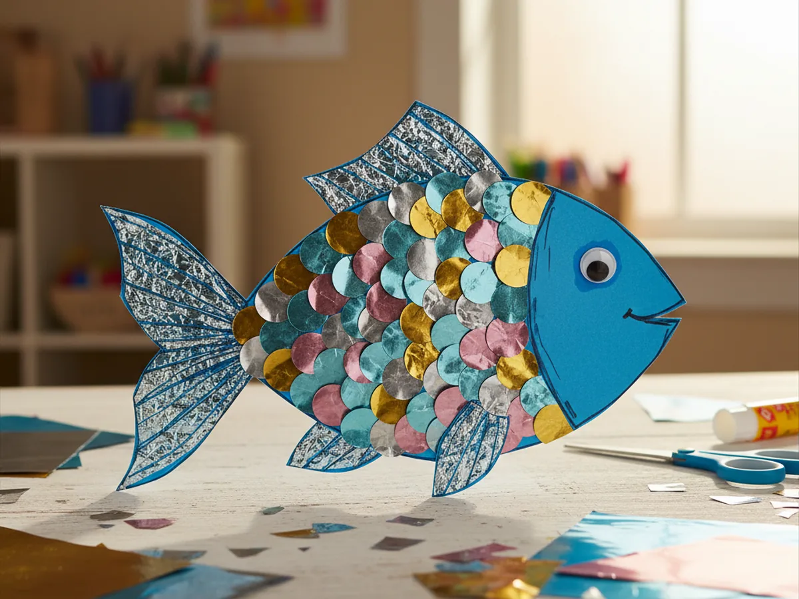
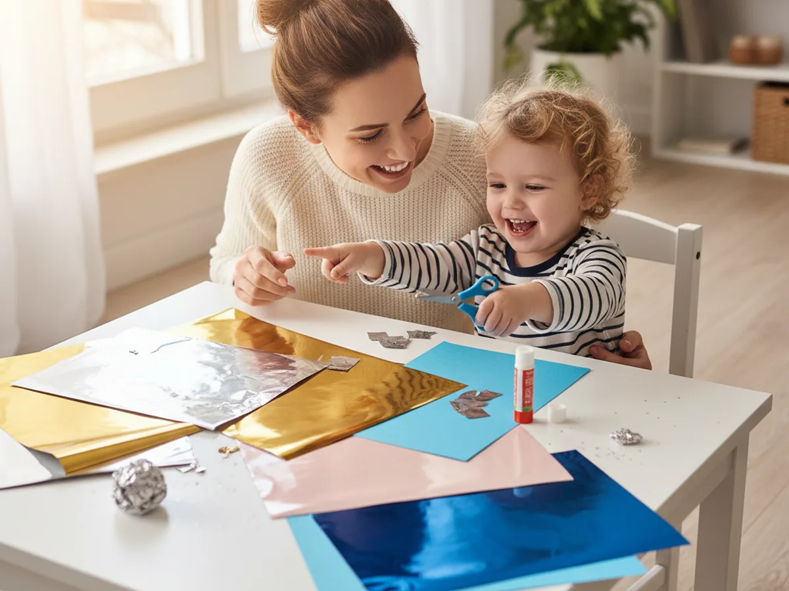
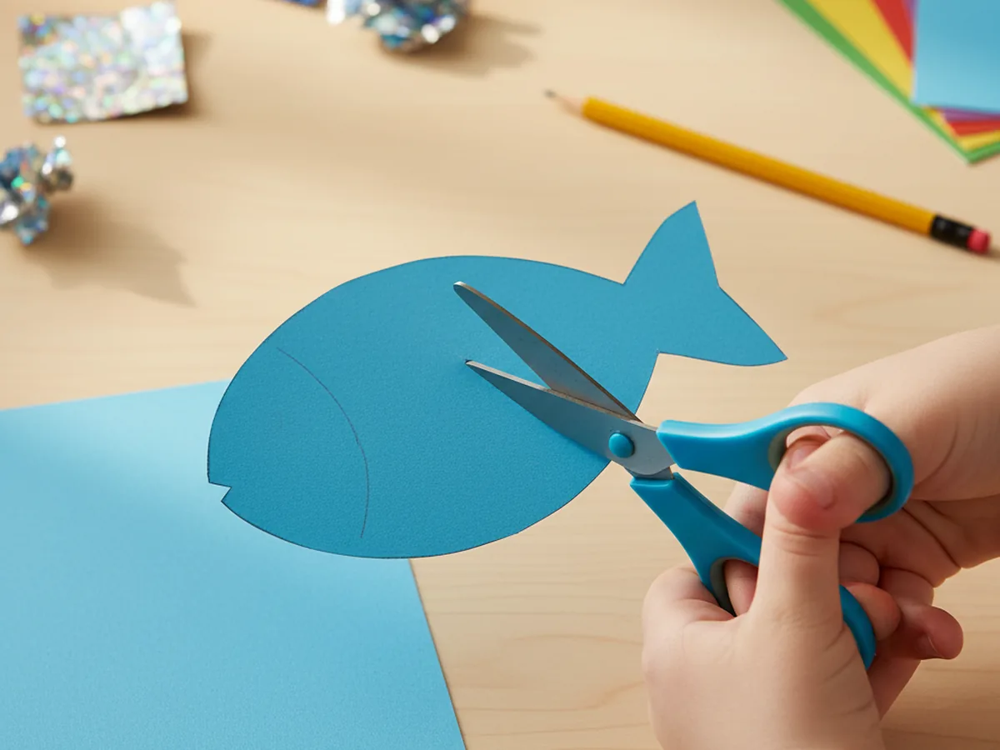
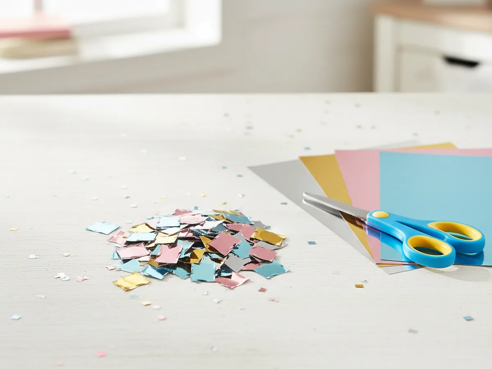
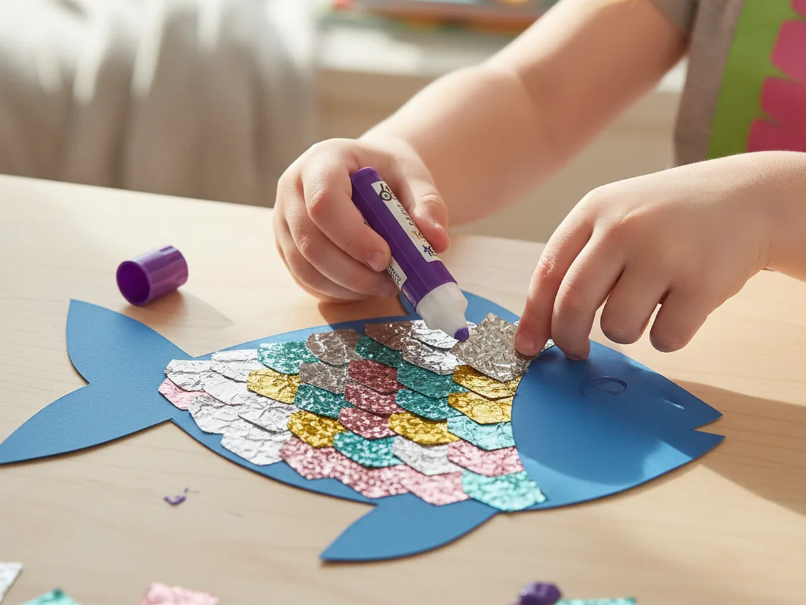
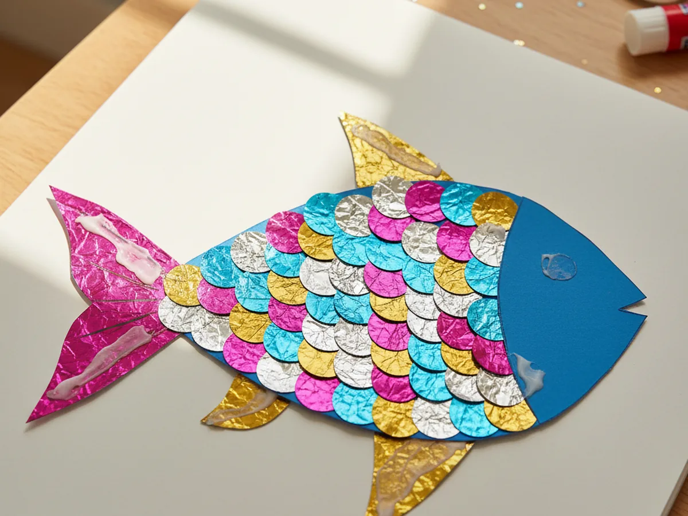
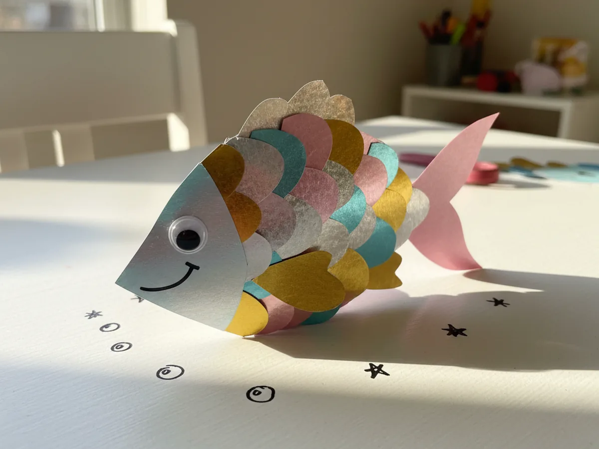
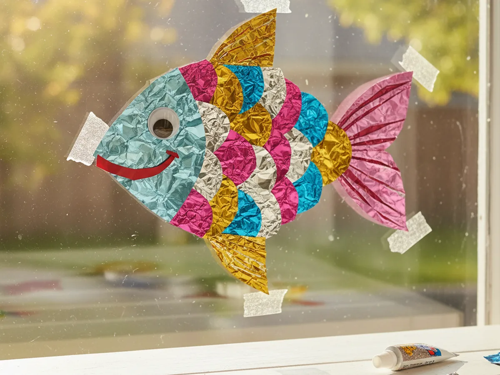

If your kiddo loves anything that sparkles, this foil paper craft is going to be a huge hit at your kitchen table. Together, you'll turn a simple blue paper fish into a shimmery little ocean friend covered in metallic scales that catch the light from every angle. It's beginner-friendly, low-mess, and the finished result looks far fancier than the few supplies it takes to make. ✨
Why Kids Love This Craft
There's something magical about working with shiny paper. The moment your child touches a piece of metallic foil paper, their eyes light up, and that wonder carries them right through the whole project. This easy foil paper craft turns into a beautiful sparkly fish that feels almost like treasure when it's finished. Kids love seeing their fish glimmer when they tilt it in the light, and they get to choose all the colors of the scales themselves.
This simple foil paper craft is also a sneaky little fine motor workout. Cutting small foil squares, peeling glue stick caps, placing scales in overlapping rows, and adding finishing details all build hand strength and steady control. It feels like play because it is play, but it is doing real developmental work behind the scenes too.
Best of all, the finished fish has serious display power. Tape it to a window where it catches the afternoon sun, hang it on a bedroom wall, or stick it on the fridge as a mini sparkle moment every time you walk by. A finished shiny foil paper fish is the kind of craft a child will want to show every visitor for weeks. 🐠

What You'll Need
Here's everything you need for this foil paper craft with your child. Most items are probably already in your craft drawer, and the metallic foil paper is the only special supply that makes this project really shine.
- Hygloss metallic foil paper, 40 sheets in 10 colors, the star supply that gives the fish its sparkly scales.
- Crayola construction paper, 12 colors, blue is perfect for the fish body and ocean background.
- Astrobrights bright cardstock, an optional sturdier swap for a fish you can hang up without it bending.
- Fiskars blunt-tip kid scissors, sized for ages 4 to 7 and easy on little hands.
- Elmer's washable purple glue sticks, the disappearing color helps kids see exactly where they have already glued.
- Self-adhesive googly eyes, a little googly eye is what makes the fish look extra friendly.
- Crayola classic broad line markers, perfect for drawing the smile, bubbles, and tiny details.
- A pencil, used to lightly sketch the fish body shape before cutting.
Step-by-Step Instructions
Follow this foil paper craft step by step. Each step is short, friendly, and easy enough for a preschooler to do most of the work with a little help from you.
Step 1: Cut Out the Fish Body
Start with a sheet of blue construction paper or cardstock. Help your child lightly sketch a simple fish body with a pencil, leaving the tail off for now. Aim for a shape about six to seven inches long, like a slightly tilted oval with a little point at the front for the mouth. Keep it simple and chunky, since a chubby fish makes the perfect canvas for shimmery scales.
Cut out the body along the pencil line. The shape doesn't need to be perfect, a slightly wobbly edge actually looks more handmade and friendly. If your child is brand new to scissors, you can pre-cut the body and let them be the official designer of the scales coming up.

Step 2: Cut Foil Paper Scales
Now for the fun part. Pick out three or four colors of metallic foil paper, like silver, blue, pink, and gold, and cut them into small one-inch squares. You'll want around twenty to thirty squares total, but trust me, you'll use more than you expect once your child sees how pretty they look. Mixing colors gives the finished fish a rainbow shimmer that looks stunning in the light.
If your preschooler is comfortable with scissors, let them snip a few foil squares themselves. The squares don't have to be identical, and slightly uneven scales actually make the finished fish look more natural and handmade. For toddlers, pre-cut all the squares ahead of time so they can focus on the fun gluing part.

Step 3: Glue the Sparkly Scales
Lay the fish body flat on the table with the head pointing to the left. Help your child glue the first row of foil squares along the back tail end of the fish, slightly overlapping each square like roof shingles. Then build the next row in front, with each new square partly covering the bottom of the row before. Keep working forward toward the head until the body is mostly covered.
Encourage your child to mix colors as they go, alternating silver, gold, pink, and blue squares for that magical rainbow scale effect. Press each square down firmly so the foil sticks well and stays smooth. Don't worry about getting the scales perfectly aligned, slightly uneven rows are part of what makes this foil paper craft feel real and handmade.

Step 4: Add the Tail and Fins
Time to give your fish its swimmy parts. Cut a wide triangle tail from a sheet of bright foil paper, about three inches long, and trim the wide end into a soft V shape so it looks like a real fish tail. Then cut two small triangle fins, one for the top of the body and one for the bottom belly area. A second color of foil paper for the fins makes a beautiful contrast.
Help your child glue the tail to the back of the fish body, with most of it sticking out behind. Then glue the top fin and bottom fin in place. Press each piece firmly so the foil stays flat. Suddenly your shiny foil paper fish looks like it could swim right off the table.

Step 5: Add the Eye and Final Details
Almost done. Stick a self-adhesive googly eye toward the front of the fish, just behind the pointed mouth area. Then use a black or dark blue marker to draw a tiny smile right under the eye. The expression makes such a difference, even one little curved line will give the fish so much personality.
For the finishing touch, draw a few small bubble dots floating up and away from the fish's mouth, plus a couple of tiny sparkle stars near the brightest scales. This little detail makes the foil paper craft fish feel like it's truly underwater. If your child wants to keep going, they can outline the fins with marker or add tiny dots between scales for extra flair.

Step 6: Display Your Sparkly Fish
The most rewarding step of all. Find a spot where the foil scales can really catch the light and show off. Tape the fish to a window so the afternoon sun makes the scales twinkle, hang it on the fridge with magnets, or pin it on a bulletin board in your child's bedroom. If you want a portable version, glue the fish to a paint stick or popsicle stick and turn it into a sparkly puppet for bath-time stories.
However you display it, this is the moment your child gets to step back and marvel at what they made. Take a quick photo, give a high five, and let them carry that little glow of pride for the rest of the day. A finished foil paper craft almost always ends with the same wide grin from the maker. 💛

Variations to Try
Foil Paper Mermaid Tail: Use the same scale technique on a long curved tail shape instead of a fish body for a magical mermaid tail your child can hang up like a banner. It feels more grown-up and works wonderfully for ages five and up who love anything ocean-themed.
Foil Paper Butterfly: Swap the fish body for a symmetrical butterfly shape and let your child decorate the wings with foil paper circles, hearts, and triangles. The shimmer on the wings looks especially gorgeous when taped to a window in spring sunlight.
Whole Ocean Scene: Glue your finished foil paper craft fish onto a larger sheet of blue construction paper, then add green tissue paper seaweed, sand made from torn brown paper, and a few smaller foil fish friends. It turns one craft into a full underwater diorama the whole family can admire.
Final Thoughts
This foil paper craft is one of those projects that delivers way more wow than the few supplies it takes. It's quick to set up, calm to do together, and the finished fish looks like a tiny piece of magic shining on the wall. It works just as well for a slow Sunday morning as it does for a birthday party activity or a rainy afternoon when you need something a little special.
Try making a few sparkly fish side by side and let each child pick their own scale colors and personality. They'll compare smiles, name their fish, and probably ask to make another one tomorrow. Happy crafting, friend!
More Crafts You'll Love
If your kiddo loved this foil paper craft, here are two more easy paper projects they will have a blast making with you: